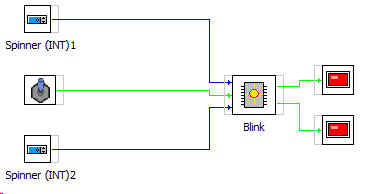

BLINK
Es un elemento capaz de generar una salida y su negada de tipo booleano de forma intermitente.
Los parámetros de entrada son:
Patron : Valor d ela unidad de tiempo
Tiempo: Unidades de tiempo
Pausa: Orden de activacion y desactivacion de la señal de salida
Ejemplo de montaje:
